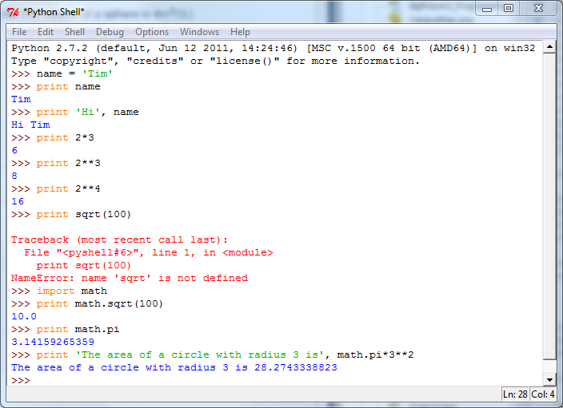

Using the Python Shell
Python is an interpreted language as opposed to a compiled language. This means that the commands making up a Python program are translated and executed one at a time as they are encountered. This is in contrast to compiled languages where all the commands making up the program are translated at once to produce an executable program that is run after compilation is complete.
One handy consequence of interpreted languages is that you can "speak" to the interpreter directly by entering Python commands at a prompt. The commands are executed and their effects are immediately visible. This is helpful both for learning Python commands by exploring their results and for debugging because you can run chunks of statements on their own to verify that they are producing what you expect.
One way to speak to the interpreter is to enter Python commands in the Python Shell. The shell is always running a REPL, which just stands for Read Evaluate Print Loop. That means that it will read whatever you type, try to evaluate it as a Python expression, and then print the result. The loop part means that it continues to do this forever.

The three greater-than signs, >>>, are the shell's prompt that it is ready for you to enter a Python expression. You can enter any of the Python
commands we have seen so far at these prompts. The shell will interpret and execute the commands
and display their output.
Here is a sample session that demonstrates a few commands that will be useful on the assignment. You should read through it noticing what commands produce what output, and then try recreating it in your own shell. Then you can try Part II of Assignment 1.

Remember that the text after the >>> signs is what I typed and the rest is what the Python shell produced.
Points to ponder:
- What is the difference between the mathematical operators
*and**? Traceback's are error messages. You'll see many of those.- What does the
importcommand seem to do?